Joe introduces Chapter 14 "In a Set of Financial Statements, What Information Is Conveyed about Noncurrent Liabilities Such as Bonds?" and speaks about the course in general.
At the end of this section, students should be able to meet the following objectives:
Question: Businesses and other organizations need funds to finance their operations and possible expansions. Such amounts can be quite significant. A portion of this money is normally contributed by investors who choose to become owners through the purchase of shares of capital stock. Cash can also be generated internally by means of profitable operations. If net income exceeds the amount of dividends paid each period, a company has an ongoing source of financing.
However, many companies obtain a large part of the funding needed to support themselves and their growth through borrowing. If those debts will not be paid back within the following year, they are listed on the balance sheet as noncurrent liabilities. Target Corporation, for example, disclosed in its financial statements that it owed $19.9 billion in noncurrent liabilities as of January 31, 2009.
Incurring debts of such large amounts must pose some risks to an organization. Creditors expect to be repaid their entire loan balance plus interestThe charge for using money over time, often associated with long-term loans; even if not specifically mentioned in the debt agreement, U.S. GAAP requires it to be computed and reported based on a reasonable rate. at the specified due date. What problems and potential dangers does an entity face when liabilities—especially those of significant size—are owed?
Answer: Few things in life are free so the obvious problem with financing through debt is that it has a cost. A bank or other creditor will charge interest for the use of its money. As an example, Target Corporation reported interest expense for the year ending January 31, 2009, of approximately $900 million. The rate of interest will vary based on economic conditions and the financial health of the debtor. As should be expected, strong companies are able to borrow at a lower rate than weaker ones.
In addition, a business must be able to generate enough surplus cash to satisfy its creditors as debts come due. As indicated, Target reports noncurrent liabilities of $19.9 billion. Eventually, company officials have to find sufficient money to satisfy these obligations. Those funds might well be generated by profitable operations or contributed by investors. Or Target might simply borrow more money to pay off these debts as they mature. This type of rollover financing is common as long as the debtor remains economically strong. Whatever the approach, the company has to manage its financial resources in such a way that all debts can be settled at their maturity date.
The most serious risk associated with debt is the possibility of bankruptcy. As has unfortunately become quite commonplace during the recent economic crisis, organizations that are not able to pay their liabilities as they come due can be forced into legal bankruptcy.A company can seek protection from its creditors by voluntarily asking the court to allow it to enter bankruptcy. Or three creditors holding a minimum amount of debt can push a company into bankruptcy, an event known as an involuntary bankruptcy filing. The end result of bankruptcyA formal court process that often results in the liquidation of a company that cannot pay its liabilities as they come due; in some cases, bankrupt companies are allowed to reorganize their finances and operations so that liquidation is not deemed to be necessary. is frequently the liquidation of company assets although corporate reorganization and continued existence is also a possibility. The bankruptcy of Circuit City ended with all assets being sold so that the company ceased to exist. Conversely, Delta Air Lines was able to leave bankruptcy in 2007 as a business that had been completely reorganized in hopes of remaining a viable entity.Information on the bankruptcy and subsequent legal reorganization of Delta Air Lines can be found at http://money.cnn.com/2007/04/30/news/companies/delta_bankruptcy/index.htm.
Given the cost and risk associated with large amounts of debt, the desire of decision makers to receive adequate and clear financial information is understandable. Few areas of financial accounting have been more discussed over the decades than the reporting of noncurrent liabilities.
Question: Debt is a costly and possibly risky method of financing a company’s operations and growth. However, advantages must exist or companies would avoid incurring noncurrent liabilities wherever possible. What are the advantages to an organization of using debt to generate funding for operations and other vital activities?
Answer: One advantage of borrowing money is that interest expense is tax deductible. Therefore, a company will essentially recoup a portion of its interest expense from the government. As mentioned above, Target incurred interest expense of $900 million. This interest reduced the company’s taxable income by that amount. If the assumption is made that Target has an effective income tax rate of 35 percent, the income tax total paid to the government is lowered by $315 million (35 percent of $900 million). Target pays interest of $900 million but reduces its income taxes by $315 million so that the net cost of borrowing for the period was $585 million.
Another advantage associated with debt financing is that it can be eliminated. Liabilities are not permanent. If the economic situation changes, a company can rid itself of all debt simply by making payments as balances come due. In contrast, if money is raised by issuing capital stock, the new shareholders can maintain their ownership indefinitely.
However, the biggest advantage commonly linked to debt is the benefit provided by financial leverageA company’s ability to earn more on borrowed money than the associated interest cost on those funds; often viewed as a wise business strategy although risks (such as possible bankruptcy) are higher.. This term refers to an organization’s ability to increase reported net income by earning more money on borrowed funds than the associated cost of interest. For example, if a company borrows $1 million on a debt that charges interest of 5 percent per year, annual interest is $50,000. If the $1 million can then be used to generate a profit of $80,000, net income has gone up $30,000 ($80,000 – $50,000) using funds provided solely by creditors. The owners did not have to contribute any additional funds to increase profits by $30,000.
Over the decades, many companies have adopted a strategy of being highly leveraged, meaning that most of their funds came from debt financing. If profitable, the owners can make huge profits with little investment of their own. Unfortunately, companies that take this approach have a much greater risk of falling into bankruptcy because of the high volume of debts that have to be serviced.
Link to multiple-choice question for practice purposes: http://www.quia.com/quiz/2093021.html
Question: Long-term financing typically comes from notes or bonds. What are notes and bonds and how do they differ from each other?
Answer: Both notes and bonds are written contracts (often referred to as indentures) that specify the payment of designated amounts of cash on stated dates. The two terms have become somewhat interchangeable over the years and clear distinctions are not likely to be found in practice. In this textbook, for convenience, the term “note” is used when a contract is negotiated directly between two parties. For example, if officials from Jones Company go to City Street Bank and borrow $1.2 million to construct a new warehouse, the contract between the parties that establishes the specifics of this loan agreement will be referred to as a note.
The term “bond” will describe a contract or group of contracts that is created by a debtor and then sold, often to a number of members of the general public. Jones Company could opt to raise the needed $1.2 million for the new warehouse by printing 1,200 $1,000 bonds that it sells to a wide array of creditors around the world.
Typically, the issuance of debt to multiple parties enables a company to raise extremely large amounts of money. As an example, according to the financial statements published by Marriott International Inc., “$350 million of aggregate principal amount of 6.375 percent Series I Senior Notes due 2017” were issued during 2007. The exact information being conveyed by this disclosure will be described in detail later in this chapter. (This transaction was followed shortly thereafter by the issuance of another $400 million of similar debt for a total of $750 million in debt financing by Marriott within that one year.)
However, if securities are to be issued to the public in this way, the legal rules and regulations of the U.S. Securities and Exchange Commission must be followed, which adds another layer of costs to the raising of funds.
Many companies have a periodic need to raise money for operations and capital improvements. Debt financing is common although it leads to an interest charge and the possibility of bankruptcy. The cost of debt is offset somewhat in that interest expense is tax deductible. Incurring liabilities also allows a company to use financial leverage to boost reported profits if the proceeds can generate more income than the cost of the related interest. Notes and bonds are debt contracts that provide the specific terms that must be followed. In this textbook, notes will indicate that loans have been negotiated between two parties whereas bonds will refer to debt instruments that are sold, often to the public.
At the end of this section, students should be able to meet the following objectives:
Question: Notes and bonds are contracts used in the borrowing of money. They are undoubtedly produced with great care by attorneys knowledgeable in contract law. What legal terms are typically included in debt instruments?
Answer: The specific terms written into a contract or indenture vary depending on what a debtor is willing to promise in order to entice a creditor to turn over needed financial resources. Some of the most common are as follows.
Face value or maturity valueAmount of a note or bond to be repaid at the end of the contract; it serves as the basis for computing interest payments and is also known as face value.. The noteA written contract to convey money as a loan at a specified interest rate and repayment schedule between two parties. or bondA written contract created by a debtor that is sold (often to members of the general public) to raise money. will specify the amount to be repaid at the end of the contract time. A $1,000 bond, for example, has a face value of $1,000—that amount is to be paid on a designated maturity date. Thus, based on the information presented previously from Marriott’s financial statements, that company will eventually be required to pay $350 million to the holders of its Series I notes.
Payment pattern of the face value or maturity value. With some debts, no part of the face value is scheduled for repayment until the conclusion of the contract period. These are often referred to as term notes or term bondsA type of debt instrument where interest is paid at regular time intervals with the entire maturity value due at the end of the contract period.. The debtor pays the entire amount (sometimes referred to as a balloon payment) when the contract reaches the end of its term. Based on the information provided, Marriott will be required to pay the $350 million face value of its Series I notes during 2017.
Other debts, serial debtsA type of debt instrument where a set amount is paid each period to cover both interest and a portion of the maturity value; home mortgages and automobile loans are common examples., require serial payments where a portion of the face value is paid periodically over time. Home mortgages, for example, are commonly structured as serial notes. Part of each scheduled payment reduces the face value of the obligation so that no large amount remains to be paid on the maturity date.
Notes and bonds can also be set up to allow the debtor to choose to repay part or all of the face value prior to the due date. Such debts are often referred to as “callable.” This feature is popular because it permits refinancing if interest rates fall. A new loan is obtained at a cheap interest rate with the money used to pay off old notes or bonds that charge high interest rates. Sometimes a penalty payment is required if a debt is paid prematurely.
Interest rate. Creditors require the promise of interest before they are willing to risk loaning money to a debtor. Therefore, within the debt contract, a stated cash interest rateThe rate for interest on a debt can be identified by any of several terms. Cash rate, stated rate, contract rate, and coupon rate are all examples of the same information: the rate of interest to be paid by the debtor at specified times. is normally included. A loan that is identified as having a $100,000 face value with a stated annual interest rate of 5 percent lets both parties know that $5,000 in interest ($100,000 × 5 percent) will be conveyed from debtor to creditor each year.
Therefore, to service the Series I notes issued above, Marriott will be required to make annual interest payments of $22,312,500 ($350 million face value × the stated interest rateRate established in a debt contract to be paid by the debtor usually at specified time intervals; it is also called cash rate, contract rate or coupon rate. of 6.375 percent).
Interest payment dates. The stated amount of interest is paid on the dates identified in the contract. Payments can range from monthly to quarterly to semiannually to annually to the final day of the debt term.
Security. Many companies are not able to borrow money (or cannot borrow money without paying a steep rate of interest) unless some additional security is provided for the creditor. Any reduction of risk makes a note or bond instrument more appealing to potential lenders. For example, some loans (often dealing with the purchase of real estate) are mortgage agreements that provide the creditor with an interest in identified property. Although specific rights can vary based on state law and the wording of the contract, this type of security usually allows the creditor to repossess the property or force its liquidation if the debtor fails to make payments in a timely manner. The recent downturn in the housing market has seen many debtor defaults that have led to bank foreclosures on homes across the country.
A debentureA debt contract that does not contain any type of security for the creditor; these contracts are usually offered by debtors that are considered financially strong so that no additional security is required by the creditor to reduce the chance of loss. is a debt contract that does not contain any security. The debtor is viewed as so financially strong that money can be obtained at a reasonable interest rate without having to add extra security agreements to the contract.
CovenantsPromises made by the debtor in a debt contract to help ensure that sufficient money will be available to make required payments at the scheduled times. and other terms. Notes and bonds can contain an almost infinite list of other agreements. Many of these are promises made by the debtor to help ensure that money will be available to make required payments. For example, the debtor might agree to limit dividend payments until the liability is extinguished, keep its current ratio above a minimum standard, or limit the amount of other debts that it will incur.
Debts can also be convertible so that the creditor can swap them for something else of value (often the capital stock of the debtor) if that seems a prudent move. The notes to the financial statements for VeriSign Inc. for December 31, 2008, and the year then ended describe one such noncurrent liability. “The Convertible Debentures are initially convertible, subject to certain conditions, into shares of the Company common stock at a conversion rate of 29.0968 shares of common stock per $1,000 principal amount of Convertible Debentures, representing an initial effective conversion price of approximately $34.37 per share of common stock.”
Question: The financial reporting of a debt contract appears to be fairly straightforward. Assume, for example, that Brisbane Company borrows $400,000 in cash from a local bank on May 1, Year One. The face value of this loan is to be repaid in exactly five years. In the interim, interest payments at an annual rate of 6 percent will be made every six months beginning on November 1, Year One. What journal entries are appropriate to record a debt issued for a cash amount that is equal to the face value of the contract?
Answer: Brisbane receives $400,000 in cash but also accepts a noncurrent liability for the same amount.
Figure 14.1 May 1, Year One—Cash of $400,000 Borrowed on Long-term Note Payable

The first semiannual interest payment will be made on November 1, Year One. Because the 6 percent interest rate stated in the contract is for a full year, it must be halved to calculate the payment that covers the six-month intervals. Each of these cash disbursements is for $12,000 which is the $400,000 face value × the 6 percent annual stated interest rate × 1/2 year.
Figure 14.2 November 1, Year One—Payment of Interest for Six Months
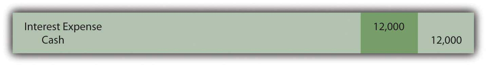By December 31, Year One, interest for two additional months (November and December) has accrued. This amount ($4,000 or $400,000 × 6 percent × 2/12 year) is recognized so that the financial statements prepared at that time will be presented fairly. No transaction occurs on that date but adjustment is necessary when preparing the Year One statements to report both the expense and the liability for these two months.
Figure 14.3 December 31, Year One—Accrual of Interest for Two Months

When the next $12,000 interest payment is made by Brisbane on May 1, Year Two, the recorded $4,000 liability is extinguished and interest for four additional months (January through April) is recognized. The appropriate expense for this period is $8,000 or $400,000 × 6 percent × 4/12 year. Mechanically, this payment could be recorded in more than one way but the following journal entry is probably the easiest to follow. Interest expense for the first two months was recorded in Year One with interest for the next four months recorded here in Year Two.
Figure 14.4 May 1, Year Two—Payment of Interest for Six Months

The interest payments and the recording process will continue in this same way until all five years have passed and the face value is paid.
Except for the initial entry, these events would be recorded in an identical fashion if Brisbane had signed this same note to acquire an asset such as a piece of machinery. No cash is involved in the beginning; the debt is incurred to acquire the property directly. The only reporting difference is that the asset replaces cash in the first journal entry above.
Link to multiple-choice question for practice purposes: http://www.quia.com/quiz/2092978.html
Question: Bonds can be sold to a group of known investors or to the public in general. Often, companies will print bond indentures but not issue them until the money is needed. Thus, many bonds are sold on a day that falls between two interest dates. Payment must still be made to creditors as specified regardless of the length of time that the debt has been outstanding. If an interest payment is required by the contract, the debtor is legally obligated.
For example, assume that the Brisbane Company plans to issue bonds with a face value of $400,000 to a consortium of twenty wealthy individuals. As with the previous note arranged with the bank, these bonds pay a 6 percent annual interest rate with payments every May 1 and November 1. However, this sale is not finalized until October 1, Year One. The first six-month interest payment is still required on November 1 as stated in the contract. After just one month, the debtor will be forced to pay interest for six months. That is not fair and Brisbane would be foolish to agree to this arrangement. How does a company that issues a bond between interest payment dates ensure that the transaction is fair to both parties?
Answer: The sale of a bond between interest dates is extremely common. Thus, a standard system of aligning the first interest payment with the time that the debt has been outstanding is necessary. Brisbane will have to pay interest for six months on November 1 even though the cash proceeds from the bond have only been held for one month. At that time, the creditor receives interest for an extra five months.
Consequently, such bonds are normally issued for a stated amount plus accrued interest. The accrued interest is measured from the previous payment date and charged to the buyer. Later, when the first interest payment is made, the net effect reflects just the time that the bond has been outstanding. If issued on October 1, Year One, the creditors should pay for the bonds plus five months of accrued interest. Then, when Brisbane makes the first required interest payment on November 1 for six months, the net effect is interest for one month—the period since the date of issuance (six months minus five months).
Assume that the creditors buy these bonds on October 1, Year One, for face value plus accrued interest. Because five months have passed since the previous interest date (May 1), interest accrued on the bond as of the issuance date is $400,000 × 6 percent × 5/12 year or $10,000. The creditors pay $400,000 for the bond and an additional $10,000 for the accrued interest to that date. Once again, the actual recording can be made in more than one way but the following seems easiest.
Figure 14.5 Issued Bond on October 1 at Face Value plus Accrued Interest Recognized for Five Months
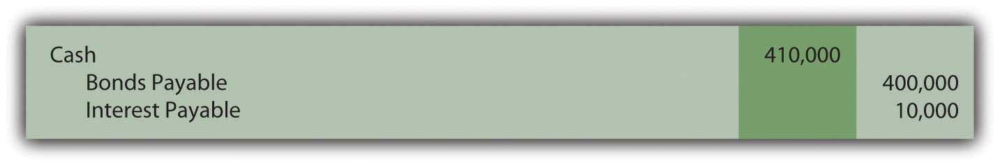After one more month passes, Brisbane makes the first interest payment of $12,000. However, interest expense of only $2,000 is actually recognized in the entry below. That is the appropriate amount of interest for one month ($400,000 × 6 percent × 1/12 year) to reflect the period that the bond has been outstanding. Interest of $10,000 for five months was collected initially; interest of $12,000 was paid for the entire six months; interest expense of $2,000 is the net result for that one month.
Figure 14.6 November 1, Year One—Payment of First Interest Payment
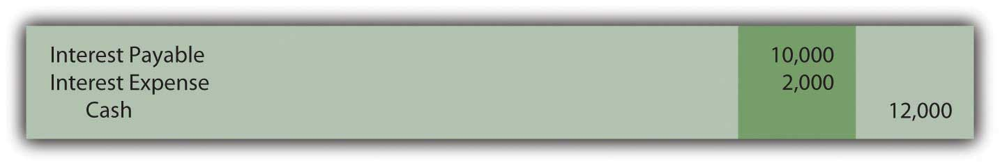After this entry, the recording continues on following the same manner as the previous example for the note payable.
Link to multiple-choice question for practice purposes: http://www.quia.com/quiz/2092979.html
Bond and note contracts include numerous terms to define the specific rights of both debtor and creditor. The face value and the payment patterns should be identified in these indentures as well as cash interest amounts and dates. Security agreements and other covenants are also commonly included. For debts that are issued at face value, interest is recorded as it is paid and also at the end of the year to reflect any accrued amount. Bonds are frequently issued between interest dates so an adjustment in the cash price must be made as well as in the recording of the first interest payment.
At the end of this section, students should be able to meet the following objectives:
Question: A wide array of bonds and other types of financial instruments can be purchased from parties seeking money. A zero-coupon bond is one that is popular because of its ease. The face value of a zero-coupon bond is paid to the investor after a specified period of time but no other cash payment is made. There is no stated cash interest. Money is received when the bond is issued and money is paid at the end of the term but no other payments are ever made. Why does any investor choose to purchase a zero-coupon bond if no interest is paid?
Answer: No investor would buy a note or bond that did not pay interest. That makes no economic sense. Because zero-coupon bonds are widely issued, some form of interest must be included. These bonds are sold at a discount below face value with the difference serving as interest. If a bond is issued for $37,000 and the company eventually repays the face value of $40,000, the additional $3,000 is interest on the debt. That is the charge paid for the use of the money that was borrowed. The price reduction below face value can be so significant that zero-coupon bonds are sometimes referred to as deep discount bonds.
To illustrate, assume that on January 1, Year One, a company offers a $20,000 two-year zero-coupon bondBonds that include no interest payments although the entire maturity value is due at the end of a specified time; these debts are issued at a discount so that the difference between the cash paid at the beginning and the cash received on the maturity date represents interest over that time period. to the public. A single payment of $20,000 will be made to the bondholder on December 31, Year Two. According to the contract, no other cash is to be paid. An investor who wishes to make a 7 percent annual interest rate can mathematically compute the amount to pay to earn exactly that interest. The debtor must then decide whether to accept this offer.
Often, the final exchange price for a bond is the result of a serious negotiation process to determine the interest rate to be earned. As an example, the potential investor might offer an amount that equates to interest at an annual rate of 7 percent. The debtor could then counter by suggesting 5 percent with the two parties finally settling on a price that provides an annual interest rate of 6 percent. In the bond market, interest rates are the subject of intense negotiations. After the effective rateThe interest rate determined by negotiation and market forces that is used to set the price of bonds; it is also called the yield rate or negotiated rate and often varies from the stated interest rate used to establish cash interest payments. (also called the yield or negotiated rate) has been established by the parties, the actual price of the bond is simply a mathematical computation.
Question: A $20,000 zero-coupon bond is being issued by a company. According to the indenture, it comes due in exactly two years. The parties have negotiated an annual interest rate to be earned of 6 percent. How is the price to be paid for a bond determined after an effective rate of interest has been established?
Answer: Determination of the price of a bond is a present value computation in the same manner as that demonstrated previously in the coverage of intangible assets. Here, a single cash payment of $20,000 is to be made by the debtor to the bondholder in two years. The parties have negotiated an annual 6 percent effective interest rate. Thus, a portion of the future cash ($20,000) serves as interest at an annual rate of 6 percent for this period of time. In a present value computation, total interest at the designated rate is calculated and subtracted to leave the present value amount. That is the price of the bond, often referred to as the principal. Interest is computed at 6 percent for two years and removed. The remainder is the amount paid for the bond.
http://www.principlesofaccounting.com/ART/fv.pv.tables/pvof1.htm
The present value of $1 in two years at an annual rate of interest of 6 percent is $0.8900. This can be found by table, by formula, or by use of an Excel spreadsheet.As explained in Chapter 11 "In a Set of Financial Statements, What Information Is Conveyed about Intangible Assets?", the present value of $1 can be mathematically determined using the formula $1/(1 + i)n. Here, i is 0.06 and n is two periods. Present value can also be determined using an Excel spreadsheet. The present value of $1 at 6 percent in two periods is found by typing the following formula into a cell: =PV(.06,2,,1,0). Because the actual payment is $20,000 and not $1, the present value of the cash flows from this bond (its price) can be found as follows:
present value = future cash payment × $0.8900 present value = $20,000 × $0.8900 present value = $17,800Bond prices are often stated as a percentage of face value. Thus, this bond is sold to the investor at “89” ($17,800/$20,000), which indicates that the price is 89 percent of the face value. The price is the future cash payments with the negotiated rate of interest removed. If the investor pays $17,800 today and the debtor returns $20,000 in two years, the extra $2,200 is the interest. And, mathematically, that extra $2,200 is exactly equal to interest at 6 percent per year.
The issuance is recorded through the following entry.The entry shown here can also be recorded in a slightly different manner. As an alternative, the liability is recorded at its face value of $20,000 with a separate discount of $2,200 also included. The discount serves as a contra account to reduce the net liability balance to its principal amount. Although mechanically different, the liability is still shown as $17,800.
Figure 14.7
Figure 14.8 January 1, Year One—Zero-Coupon Bond Issued at Effective Annual Rate of 6 Percent
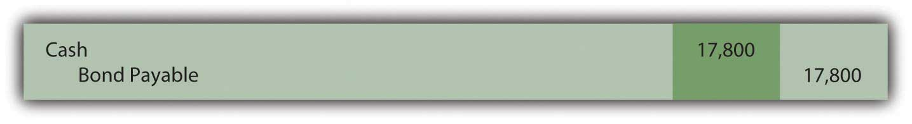Link to multiple-choice question for practice purposes: http://www.quia.com/quiz/2093023.html
Question: This $20,000 zero-coupon bond is issued for $17,800 so that a 6 percent annual interest rate will be earned. As shown in the above journal entry, the bond is initially recorded at this principal amount. Subsequently, two problems must be addressed by the accountant. First, the company will actually have to pay $20,000. The $17,800 principal balance must be raised to that figure. The liability should be reported as $20,000 at the end of Year Two. Second, the $2,200 difference between the amount received and the eventual repayment ($20,000 less $17,800) has to be recognized as interest for these two years. The additional payment is the cost of the debt, the interest. To arrive at fairly presented figures, these two problems must be resolved. How is a zero-coupon bond reported in the period after its issuance?
Answer: In Chapter 11 "In a Set of Financial Statements, What Information Is Conveyed about Intangible Assets?", the effective rate method of reporting a present value figure over time was demonstrated. It solves both of the accounting problems mentioned here. The debt balance is raised gradually to the face value and interest of 6 percent is reported each year over the entire period.
Interest for Year One should be the $17,800 principal balance multiplied by the effective interest rate of 6 percent to arrive at interest expense for the period of $1,068. However, no payment is made. Thus, this interest is compounded—added to the principal. Interest that is recognized but not paid at that time must be compounded.
Figure 14.9 December 31, Year One—Interest on Zero-Coupon Bond at 6 Percent RateIf a discount is recorded in the initial entry as is shown in the previous footnote, the credit here is to the Discount account and not directly to the bond payable. The contra account is reduced so the net liability balance increases. Thus, overall reporting of the interest and the liability is not impacted by the method used in recording the issuance of the bond.

The compounding of this interest raises the principal by $1,068 from $17,800 to $18,868. The balances to be reported in the financial statements at the end of Year One are as follows:
| Year One—Interest Expense (Income Statement) | $1,068 |
| December 31, Year One—Bond Payable (Balance Sheet) | $18,868 |
Interest for Year Two is 6 percent of the new liability balance of $18,868 or $1,132 (rounded). The principal is higher in this second year because of the compounding (addition) of the first year interest. If the principal increases, subsequent interest must also go up.
Figure 14.10 December 31, Year Two—Interest on Zero-Coupon Bond at 6 Percent Rate
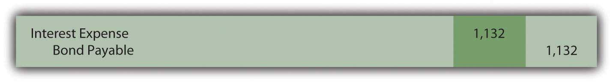Note that the bond payable balance has now been raised to $20,000 as of the date of payment ($17,800 + $1,068 + $1,132). In addition, interest expense of $2,200 ($1,068 + $1,132) has been recognized over the two years. That was exactly 6 percent of the principal in each of the two years. Total interest reported for this zero-coupon bond is equal to the difference between the amount received by the debtor and the face value repaid. Both of the accounting problems have been resolved through use of the effective rate method.
The $17,800 price of the bond was computed mathematically based on
If interest is then recognized each period based on this same set of variables, the resulting numbers will reconcile. Interest expense for the two years has to be $2,200 and the final liability balance must come back to $20,000.
Link to multiple-choice question for practice purposes: http://www.quia.com/quiz/2093003.html
Link to multiple-choice question for practice purposes: http://www.quia.com/quiz/2092980.html
Question: This bond was sold at the present value of its future cash flows based on a rate of interest negotiated by the parties involved. Interest was then recognized periodically by applying the effective rate method. Is the effective rate method the only acceptable technique that can be used to compute and report interest when the face value of a debt differs from its issue price?
Answer: Interest can also be calculated for reporting purposes by a simpler approach known as the straight-line method. Using this technique, an equal amount of the discount is assigned to interest each period over the life of the bond. This zero-coupon bond was sold for $2,200 below face value to provide interest to the buyer. Payment will be made in two years. The straight-line method simply recognizes interest of $1,100 per year ($2,200/2 years).
Figure 14.11 December 31, Years One and Two—Interest on Zero-Coupon Bond at 6 Percent Rate—Straight-Line Method

Once again, the bond payable balance has been raised to $20,000 at the end of the second year ($17,800 + $1,100 + $1,100) and total interest expense over the life of the bond equals the $2,200 discount ($1,100 + $1,100). However, a question should be raised as to whether the information reported under this method is a fairly presented portrait of the events that took place. Although the bond was sold to earn 6 percent annual interest, this rate is not reported for either period.
Year One: $1,100 interest/$17,800 principal = 6.2 percent
Compounding of the interest raises the principal by $1,100 to $18,900
Year Two: $1,100 interest/$18,900 principal = 5.8 percent
In reality, the parties established an annual rate of 6 percent for the entire two-year period. When applying the straight-line method, this actual rate is not shown for either year. Furthermore, the reported interest rate appears to float (6.2 percent to 5.8 percent) as if a different rate was negotiated for each year. That did not happen; there was a single 6 percent interest rate agreed-upon by the debtor and the creditor.
The straight-line method does not reflect the reality of the transaction. However, it can still be applied according to U.S. GAAP but only if the reported results are not materially different from those derived using the effective rate method.
Link to multiple-choice question for practice purposes: http://www.quia.com/quiz/2093004.html
Zero-coupon bonds pay no cash interest. They are sold at a discount to provide interest to the buyer. The price of the bond is determined by computing the present value of the required cash flows using the effective interest rate negotiated by the two parties. Present value represents the principal of the debt with all future interest mathematically removed. The bond is recorded at this principal. Interest is subsequently determined each period based on the effective rate. Because no cash interest is paid, the entire amount recognized as interest must be compounded (added) to the principal. The straight-line method can also be used to record interest if the resulting numbers are not materially different from the effective rate method. This alternative assigns an equal amount of the discount to interest each period over the bond’s life.
At the end of this section, students should be able to meet the following objectives:
Question: Although zero-coupon bonds are popular, notes and most bonds actually do pay a stated rate of cash interest, one that is specified in the contract. If the buyer and the seller negotiate an effective rate of interest that is the same as this stated rate, an amount equal to face value is paid for the bond. If the stated interest to be paid is 7 percent each year and a negotiated annual rate of 7 percent is accepted by the parties, the bond is issued for face value. No discount or premium results; the debtor and creditor are satisfied with the interest being paid. The effective rate method is not needed because the cash interest and the effective interest are the same—7 percent is paid and recognized as interest.
However, the negotiated rate often differs from the cash rate stated in a bond contract. Market interest rate conditions change quickly. The interest that creditors demand will often shift between the printing of the indenture and the actual issuance day. Or the financial reputation of the company might vary during this time. Information travels so quickly in this technology age that news about companies—both good and bad—spreads rapidly throughout the business community.
To illustrate, assume that Smith Corporation decides to issue $1 million in bonds to the public on January 1, Year One. These bonds come due in four years. In the interim, interest at a stated cash rate of 5 percent will be paid each year starting on December 31, Year One. These are term bonds because interest is conveyed periodically by the debtor but the entire face value is not due until the end of the term.
No investors can be found who want to purchase Smith Corporation bonds with only a 5 percent annual return. Therefore, in setting an issuance price, annual interest of 6 percent is negotiated. Possibly, interest offered by other similar companies is 6 percent so that Smith had to match this rate to entice investors to buy its bonds. Or some event has taken place recently that makes Smith seem slightly more risky causing potential creditors to demand a higher rate of return. A list of market conditions that can impact the price of a bond would be almost unlimited. How is the price of a bond calculated when the stated cash rate is different from the effective rate that is negotiated by the two parties involved?
Answer: The pricing of a bond always begins by identifying the cash flows established by the contract. These amounts are set and not affected by the eventual sales price. The debtor is legally obligated to make these payments regardless of whether the bond is sold for $1 or $10 million.
Here, Smith Corporation must pay $50,000 per year in interest ($1 million × 5 percent) for four years and then the $1 million face value:
| Cash Flows in Bond Contract |
|---|
| $50,000 annually for four years |
| $1,000,000 in four years |
After the cash flows are identified, the present value of each is calculated at the negotiated rate. These present values are then summed to get the price to be paid for the bond. The $50,000 interest payments form an annuity since equal amounts are paid at equal time intervals. Because this interest is paid at the end of each period starting on December 31, Year One, these payments constitute an ordinary annuity.As mentioned in earlier discussions about intangible assets, an annuity with payments made at the beginning of each period is known as an annuity due. If the interest here had been paid starting on January 1, Year One, the payments would form an annuity due rather than an ordinary annuity. The cash flow pattern for notes and bonds is more likely to be in the form of an ordinary annuity since interest is not typically paid in advance. As determined by table, formula, or Excel spreadsheet, the present value of an ordinary annuity of $1 at an effective annual interest rate of 6 percent over four years is $3.46511.The mathematical formula to determine the present value of an ordinary annuity of $1 is (1 – 1/[1 + i]n)/i, where i is the appropriate interest rate (6 percent in this illustration) and n is the number of payment periods (four). If using an Excel spreadsheet, the present value of a $1 per period ordinary annuity for four periods at an annual rate of interest of 6 percent can be found by typing the following data into a cell: =PV(.06,4,1,,0). Thus, the present value of the four interest payments is $50,000 times $3.46511 or $173,256 (rounded). Note that the present value computation requires the multiplication of one annuity payment ($50,000) rather than the total of the interest payments ($200,000).
http://www.principlesofaccounting.com/ART/fv.pv.tables/pvofordinaryannuity.htm
The second part of the cash flows promised by this bond is a single payment of $1 million in four years. The present value of $1 in four years at a 6 percent annual rate is $0.79209 so the present value of the entire $1 million is $792,090.
http://www.principlesofaccounting.com/ART/fv.pv.tables/pvof1.htm
The total present value of the cash flows promised by this bond at an annual 6 percent rate for four years is $173,256 (cash interest) plus $792,090 (face value) or $965,346. Smith will receive this amount on January 1, Year One and pays back $50,000 per year for four years followed by a single payment of $1 million. Mathematically, that is equivalent to earning a 6 percent rate of interest each year for four years.
Figure 14.12 January 1, Year One—Term Bonds Issued at an Effective Rate of 6 Percent

Link to multiple-choice question for practice purposes: http://www.quia.com/quiz/2092981.html
Question: The debtor here has the same accounting problems that were discussed in connection with the previous zero-coupon bonds. First, the recorded principal of this term bond must be raised gradually from $965,346 to the $1 million face value over these four years. Second, the cash interest of 5 percent paid each year has to be adjusted to the annual 6 percent effective rate negotiated by the two parties. How does a debtor report a bond payable over its life if the stated interest rate and the effective rate differ?
Answer: At the end of Year One, Smith Corporation pays $50,000 cash interest to the bondholders ($1 million face value × the 5 percent stated rate) as specified in the contract. However, reported interest on this debt must be recognized at the agreed upon rate of 6 percent that led to the initial principal payment of $965,346. The $34,654 discount below face value ($1 million less $965,346) was accepted by Smith (the debtor) as a means of increasing the actual annual rate of return from 5 percent to 6 percent.
The effective rate is reflected in the financial statements by recognizing interest in Year One of $57,921 (rounded), which is the $965,346 principal times 6 percent. The $7,921 difference between the effective interest expense of $57,921 and the cash interest payment of $50,000 will eventually be paid but not until the end of the four-year term when $1 million rather than $965,346 is conveyed to the bondholders. Therefore, at the end of Year One, this extra $7,921 is compounded. Only the portion of this interest that is not being paid is added to the principal. Earlier, with the zero-coupon bond, the entire amount of interest was compounded because no cash interest payment was made.
Figure 14.13 December 31, Year One—Payment of Cash Interest at 5 Percent Rate
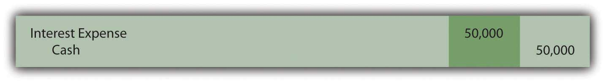Figure 14.14 Compounding Adjustment to Bring Interest to Effective Annual Rate of 6 PercentThese two entries are often combined. Students should use one entry or two depending on which is easiest to understand.
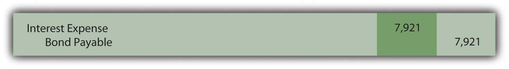Interest expense reported on the income statement for Year One of $57,921 ($50,000 + $7,921) equals the 6 percent effective rate times the principal of the debt for that period. The liability reported for the bond payable at the end of Year One has begun to move closer to the $1 million face value. It is now $973,267 ($965,346 + $7,921) as a result of the compounding.
Reported figures for the remaining three years of this bond contract can be computed to verify that the ending balance does grow to $1 million by the time of payment.
Figure 14.15 Reported Bond Figures for the Remaining Three Years until MaturityInterest expense for the final year has been increased by $3 so that the final bond payable balance is exactly equal to the $1 million that must be paid. Slight adjustments of this type are common to compensate for numbers having been rounded.
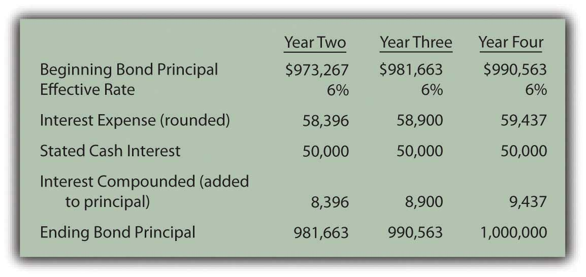Through the use of the effective rate method, interest expense of 6 percent is recognized each period and the principal balance of the liability gradually grows to equal the face value of the bond.
Link to multiple-choice question for practice purposes: http://www.quia.com/quiz/2093005.html
In the issuance of a term bond, the stated cash interest rate is often different from the effective interest rate negotiated by the creditor and the debtor. To compute the amount to be exchanged for this bond, the cash flows must be determined based on the specifics of the contract and their present value calculated. The resulting total is the amount paid so that the agreed upon rate of interest is earned over the life of the bond. The bond is initially recorded at present value to reflect its principal at that time. Cash interest payments are recorded thereafter and then adjusted based on the effective interest rate. The interest rate stated in the contract times the face value provides the amount of the cash payments. The principal times the effective rate gives the interest to be recognized for the period. The difference in the effective interest and the cash payment is compounded (added to the principal of the debt).
At the end of this section, students should be able to meet the following objectives:
Question: The previous section of this chapter looked at term bonds. Interest was paid each period although payment of the face value did not occur until the end of the four-year term. How does this process differ for a serial bond where both interest and a portion of the face value are paid periodically?
To illustrate, assume that Smith Corporation issues a four-year, $1 million serial bond on January 1, Year One, paying a 5 percent stated interest rate at the end of each year on the unpaid face value for the period. The bond contract specifies that $250,000 of the face value is also to be paid annually at the same time as the interest. Smith and the potential investors negotiate for some time and finally agree on a 6 percent annual effective rate. What accounting is appropriate for a serial bond?
Answer: In reporting a term bond, five steps were taken:
This same process is applied when a serial bond is issued. The sole difference is that additional payments are made periodically to reduce the face value of the debt.
For the Smith Corporation serial bond described above, the following steps are required.
Identify cash flows specified in the bond contract. As a serial bond, Smith is required to pay $250,000 to reduce the face value each year. In addition, the unpaid face value for Year One is $1 million so the 5 percent stated rate necessitates a $50,000 year-end interest payment. Following the first principal payment, the remaining face value is only $750,000 throughout the second year. Thus, the interest payment at the end of that period falls to $37,500 ($750,000 × 5 percent). Based on the contract, the cash flows required by this bond are as follows.
Figure 14.16 Cash Payments Required by Bond Contract
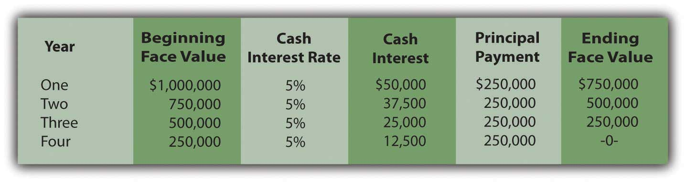Determine present value of the cash flows. These required cash flows can be organized in either of two ways.
The same cash flows are being described so the present value of both patterns will be the same $977,714 whichever approach is followed.
http://www.principlesofaccounting.com/ART/fv.pv.tables/pvofordinaryannuity.htm
http://www.principlesofaccounting.com/ART/fv.pv.tables/pvof1.htm
Figure 14.17 Computation of Present Value of Serial Bond—First Pattern of Cash Flows
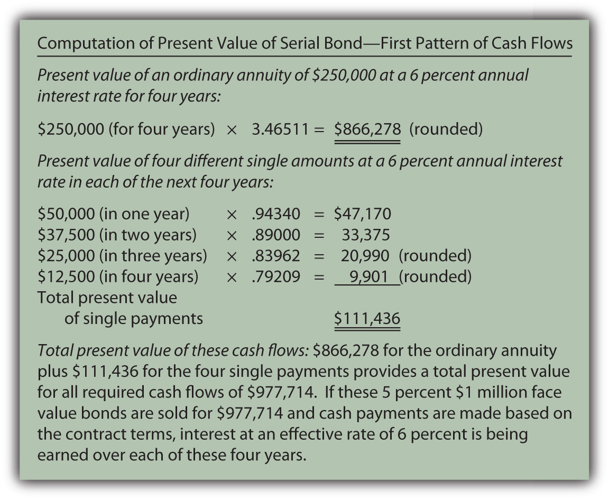Figure 14.18 Computation of Present Value of Serial Bond—Second Pattern of Cash Flows

Record the principal amount received for the bond. Based on this computation, if $977,714 is paid for this four-year $1 million serial bond with an annual stated rate of 5 percent, the effective rate being earned by these cash flows will be 6 percent per year. Accepting a discount of this amount increases the effective rate of interest from 5 percent to exactly 6 percent. The issuance of the bond is recorded through the following journal entry.
Figure 14.19 January 1, Year One—Issuance of $1 Million Serial Bonds Paying 5 Percent Annual Interest with Effective Negotiated Rate of 6 Percent

Payment of stated cash interest at 5 percent annual rate. Because of the terms specified in the contract, interest of $50,000 will be paid at the end of Year One, $37,500 at the end of Year Two, and so on as the face value is also paid. The Year One payment is recorded as follows.
Figure 14.20 December 31, Year One—Payment of 5 Percent Interest on Serial Bond

This same entry is made each year except that the payments will fall to $37,500, $25,000, and finally $12,500.
Effective rate method is applied to recognize negotiated interest rate. For the first year, the principal balance is the original issuance price of $977,714. The yield rate decided by the two parties was 6 percent so the interest to be recognized is $58,663 (rounded). As shown in the above entry, the cash interest paid is only 5 percent of the face value or $50,000. The extra interest for the period ($8,663) is compounded—added to the principal of the bond payable.
Figure 14.21 December 31, Year One—Adjustment of Interest from Cash Rate to Effective Rate

In addition, as a serial bond, the first payment of the face value is made at the end of Year One.
Figure 14.22 December 31, Year One—Payment on Face Value of Serial Bond

Whether it is a term bond or a serial bond, the process is the same. All the amounts to be recorded over the four-year life of this bond can be computed to verify that the final payment does remove the debt precisely.
Figure 14.23 Balances to be Reported Over the Four-year Life of Serial BondThe interest recognized in the final year has been adjusted by $3 to compensate for the rounding of several computations so that the liability balance drops to exactly zero after four years.

Link to multiple-choice question for practice purposes: http://www.quia.com/quiz/2093006.html
Link to multiple-choice question for practice purposes: http://www.quia.com/quiz/2092982.html
The issuance price for bonds can be computed and the subsequent accounting can be outlined in five general steps: determining the cash payments required by the contract, calculating the present value of those cash flows at the negotiated effective rate, recording the bond at this present value amount, recording each periodic cash interest payment, and adjusting the stated cash interest payments to the effective interest rate. A serial bond follows this process although some part of the face value is also paid each period. The principal goes up each period as a result of interest compounding. However, for a serial bond, it also goes down because of the periodic face value payments.
At the end of this section, students should be able to meet the following objectives:
Question: In the previous examples, both the interest rates and payments covered a full year. How is this process affected if interest payments are made at other time intervals such as each quarter or semiannually?
As an illustration, assume that on January 1, Year One, an entity issues bonds with a face value of $500,000 that will come due in six years. Cash interest payments at a 6 percent annual rate are required by the contract but the actual disbursements are made every six months on June 30 and December 31. The debtor and the creditor negotiate an effective interest rate of 8 percent per year. How is the price of a bond determined and the debt reported if interest payments occur more often than once each year?
Answer: None of the five basic steps for issuing and reporting a bond is changed by the frequency of the interest payments. However, both the stated cash rate and the effective rate must be set to agree with the time interval between the payment dates. The number of periods used in the present value computation is also based on the length of this interval.
In this example, interest is paid semiannually so each time period is only six months in length. The stated cash rate to be used for that period is 3 percent or 6/12 of 6 percent. Similarly, the effective interest rate is 4 percent or 6/12 of 8 percent. Both of these interest rates must align with the specific amount of time between payments. Over the six years until maturity, there are twelve of these six-month periods of time.
Thus, the cash flows will be the following:
Plus
As indicated, the effective rate to be used in determining the present value of these cash payments is 4 percent per period or 6/12 times 8 percent.
http://www.principlesofaccounting.com/ART/fv.pv.tables/pvof1.htm
http://www.principlesofaccounting.com/ART/fv.pv.tables/pvofordinaryannuity.htm
Figure 14.24 January 1, Year One—Issuance of $500,000 Bond to Yield Effective Rate of 4 Percent Semiannually

On June 30, Year One, the first $15,000 interest payment is made. However, the effective rate of interest for that period is the principal of $453,076 times the six-month negotiated rate of 4 percent or $18,123 (rounded). Therefore, the interest to be compounded for this period is $3,123 ($18,123 interest less $15,000 payment). That is the amount of interest recognized but not paid on this day.
Figure 14.25 June 30, Year One—Cash Interest Paid on Bond
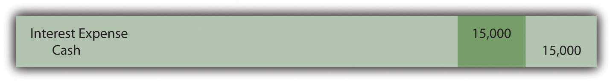Figure 14.26 June 30, Year One—Interest on Bond Adjusted to Effective Rate

For the second six-months in Year One, the compound interest recorded above raises the bond’s principal to $456,199 ($453,076 principal for first six months plus $3,123 in compound interest). Although another $15,000 in cash interest is paid on December 31, Year One, the effective interest for this six-month period is $18,248 (rounded) or $456,199 times 4 percent interest. Compound interest recognized for this second period of time is $3,248 ($18,248 less $15,000).
Figure 14.27 December 31, Year One—Cash Interest Paid on Bond
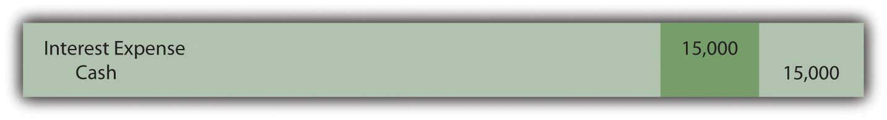Figure 14.28 December 31, Year One—Interest on Bond Adjusted to Effective Rate

The Year One income statement will report interest expense of $18,123 for the first six months and $18,248 for the second, giving a total for the year of $36,371.
The December 31, Year One, balance sheet reports the bond payable as a noncurrent liability of $459,447. That is the original principal (present value) of $453,076 plus compound interest of $3,123 (first six months) and $3,248 (second six months).
Once again, interest each period has been adjusted from the cash rate stated in the contract to the effective rate negotiated by the two parties. Here, the annual rates had to be halved because payments were made semiannually. In addition, as a result of the compounding process, the principal balance is moving gradually toward the $500,000 face value that will be paid at the end of the bond term.
Link to multiple-choice question for practice purposes: http://www.quia.com/quiz/2093024.html
Bonds often pay interest more frequently than once a year. If the stated cash rate and the effective rate differ, present value is still required to arrive at the principal amount to be paid. However, the present value computation must be adjusted to reflect the different pattern of cash flows. The length of time between payments is considered one period. The effective interest rate is then determined for that particular period of time. The number of time periods used in calculating present value is also based on this same definition of a period. The actual accounting and reporting are not affected, merely the method by which the interest rates and the number of periods are calculated.
Following is a continuation of our interview with Kevin G. Burns.
Question: Assume that you are investigating two similar companies because you are thinking about recommending one of them to your clients as an investment possibility. The financial statements look much the same except that one of these companies has an especially low amount of noncurrent liabilities while the other has a noncurrent liability total that seems quite high. Which company are you most likely to recommend?
Kevin Burns: I have done well now for many years by being a conservative investor. My preference is always the company that is debt free or as close to debt free as possible. I do not like leverage, never have. I even paid off my own home mortgage more than ten years ago.
On the other hand, long-term liabilities have to be analyzed as they are so very common. Is any of the debt convertible so that it could potentially dilute everyone’s ownership in the company? Is the company paying a high stated rate of interest? Why was the debt issued? In other words, how did the company use the money it received? As with virtually every area of a set of financial statements, you have to look behind the numbers to see what is actually happening. If the debt was issued at a low interest rate in order to make a smart acquisition, I am impressed. If the debt has a high interest rate and the money was not well used, that is not attractive to me at all.
Joe talks about the five most important points in Chapter 14 "In a Set of Financial Statements, What Information Is Conveyed about Noncurrent Liabilities Such as Bonds?".
Which of the following is not a type of bond?
Kitten Inc. issued $105,000 in bonds on September 1. The annual interest rate is 6 percent and interest is paid on the bonds every June 30 and December 31. When the bonds are issued on September 1, how much cash will the company collect?
Which of the following is an agreement which debtors sign as part of getting a loan that serves to protect a creditor?
Which of the following is not a reason companies borrow money?
Which of the following refers to an asset a creditor could take from a debtor if the debtor fails to pay back a loan?
Krystal Corporation issued $100,000 with a 4 percent stated rate of interest on January 1. The effective rate of interest on that date was 6 percent and interest is paid semiannually on June 30 and December 31. The bonds mature ten years from now. What amount would bondholders be willing to pay Krystal on January 1 for the bonds?
Joni Corporation borrows $500,000 from Friendly Bank on February 1, 20X8. The principal will not be repaid until the end of six years, but interest payments are due every February 1 and August 1. The interest rate is 4 percent annually. Record the journal entry necessary for each of the following:
Colson Corporation issues bonds to finance an expansion of its hot swimwear line. The $50,000 in bonds is issued on April 1, 20X4 and pay interest in the amount of 5 percent annually. Interest payments are made semiannually, every April 1 and October 1. Record the journal entry necessary for each of the following:
Assume the same facts as in problem 2 above, but instead of issuing the bonds on April 1, 20X4, the bonds are issued on July 1, 20X4. Record the journal entry necessary for each of the following.
Keller Corporation offers a zero-coupon bond of $80,000 on January 1, 20X5. It will come due on December 31, 20X7. Potential bondholders and Keller negotiate an annual interest rate of 7 percent on the bonds.
Jaguar Corporation issues term bonds with a face value of $300,000 on January 1, 20X1. The bonds have a stated rate of interest of 7 percent and a life of four years. They pay interest annually on December 31. The market value on the date of issuance was 9 percent. Record all necessary journal entries on the following dates.
Collins Company issues term bonds with a face value of $100,000 on May 1, 20X3. The bonds have a stated rate of interest of 4 percent and a life of ten years. They pay interest semiannually on June 30 and December 31. The market value on the date of issuance was 6 percent. Record all necessary journal entries on the following dates:
Fitzgerald Corporation issues a $3,000,000 in serial bonds on August 1, 20X2. The terms are as follow:
Chyrsalys Corporation issues $4,000,000 in serial bonds on January 1, 20X5, with a stated interest rate of 3 percent. On this date, investors demand an effective interest rate of 4 percent. The bond terms specify that interest and $2,000,000 in principal will be paid on January 1, 20X6 and 20X7.
This problem will carry through several chapters, building in difficulty. It allows students to continuously practice skills and knowledge learned in previous chapters.
In Chapter 13 "In a Set of Financial Statements, What Information Is Conveyed about Current and Contingent Liabilities?", you prepared Webworks statements for January. They are included here as a starting point for February.
Figure 14.29 Webworks Financial Statements
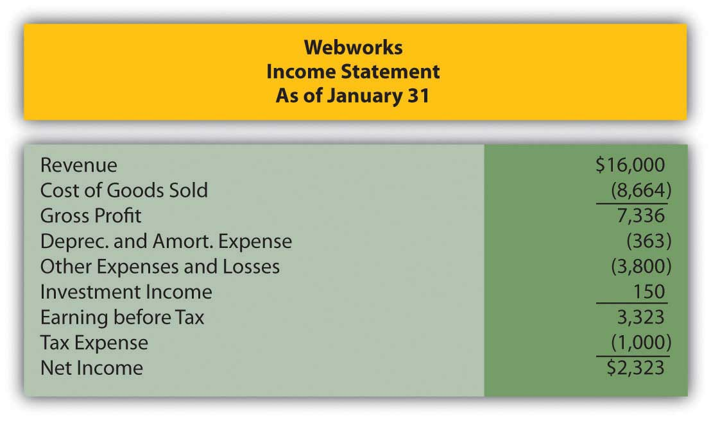Figure 14.30
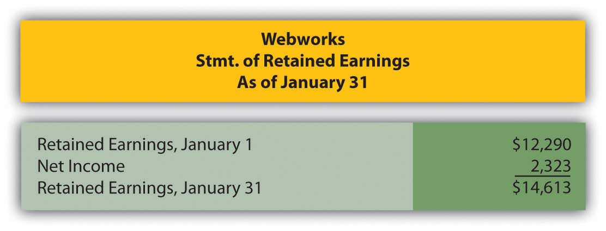Figure 14.31
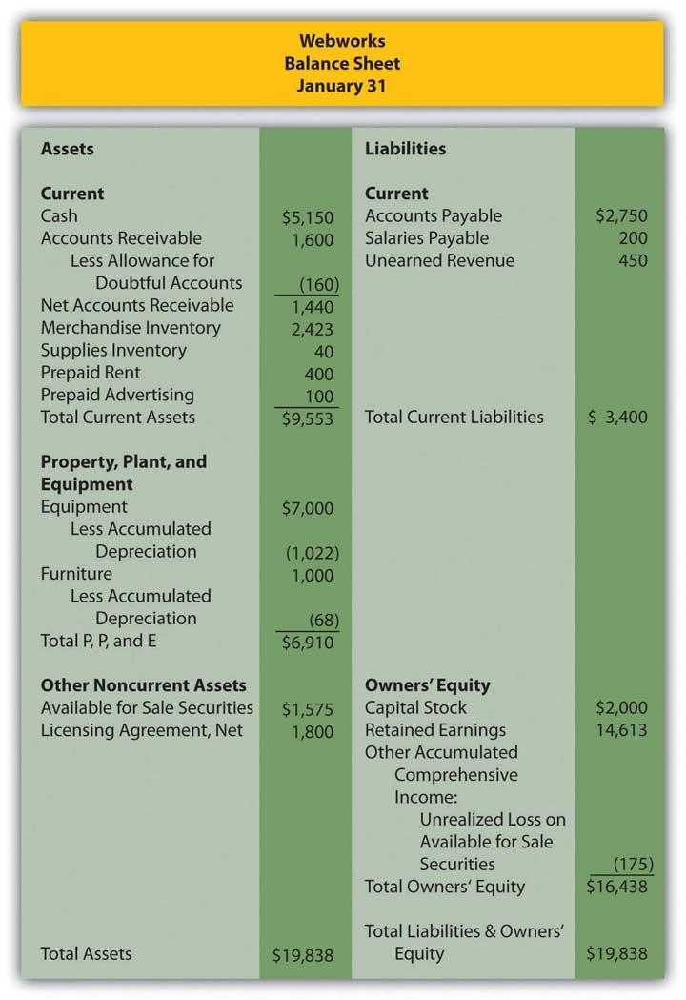The following events occur during February:
a. Webworks starts and completes nine more Web sites and bills clients for $5,400.
b. Webworks purchases supplies worth $150 on account.
c. At the beginning of February, Webworks had nineteen keyboards costing $117 each and ten flash drives costing $20 each. Webworks uses periodic FIFO to cost its inventory.
d. On account, Webworks purchases seventy keyboards for $118 each and one hundred of the new flash drives for $22 each.
e. On February 1, Webworks borrows $3,000 from Local Area Bank. The loan plus accrued interest will be repaid at the end of two years. The interest rate is 6 percent.
f. Webworks purchases new computer equipment for use in designing Web sites. The equipment costs $5,500 and was paid for in cash.
g. Webworks pays Nancy $800 for her work during the first three weeks of February.
h. Webworks sells seventy-five keyboards for $11,250 and ninety of the new flash drives for $2,700 cash.
i. Webworks collects $5,200 in accounts receivable.
j. Webworks purchases one hundred shares of RST Company for $18 per share in cash. This is considered a trading security.
k. Webworks pays off its salaries payable from January.
l. Webworks is hired to design Web sites for a local photographer and bakery. It is paid $600 in advance.
m. Webworks pays off $11,300 of its accounts payable.
n. Webworks pays Leon a salary of $2,000.
o. Webworks completes the salon Web site and earns the $450 paid in January.
p. RST Company pays Webworks a dividend of $25.
q. Webworks pays taxes of $1,558 in cash.
Required:
A. Prepare journal entries for the above events.
B. Post the journal entries to T-accounts.
C. Prepare an unadjusted trial balance for Webworks for February.
D. Prepare adjusting entries for the following and post them to your T-accounts.
r. Webworks owes Nancy $220 for her work during the last week of February.
s. Leon’s parents let him know that Webworks owes $300 toward the electricity bill. Webworks will pay them in March.
t. Webworks determines that it has $70 worth of supplies remaining at the end of January.
u. Prepaid rent should be adjusted for February’s portion.
v. Prepaid advertising should be adjusted for February’s portion.
w. Webworks is continuing to accrue bad debts at 10 percent of accounts receivable.
x. Webworks continues to depreciate its equipment over four years and its furniture over five years, using the straight-line method. The new equipment will also be depreciated over five years using the straight-line method.
y. The license agreement should be amortized over its one-year life.
z. QRS Company is selling for $12 per share and RST is selling for $16 per share on February 28.
i. Interest should be accrued for February.
ii. Record cost of goods sold.
E. Prepare an adjusted trial balance.
F. Prepare financial statements for February.